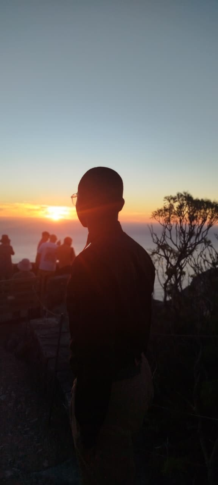

肖像 — Portrait
Thembalakhe
Ntimbane
- 開発Software Developer
- 写真Photographer
- 編集Video Editor
I'm a software developer, photographer, and video editor — A True
Hero is one that leaves a legacy of their stories--
Here is
mine.

人物 — 2026
光と影
交流 — Find Me